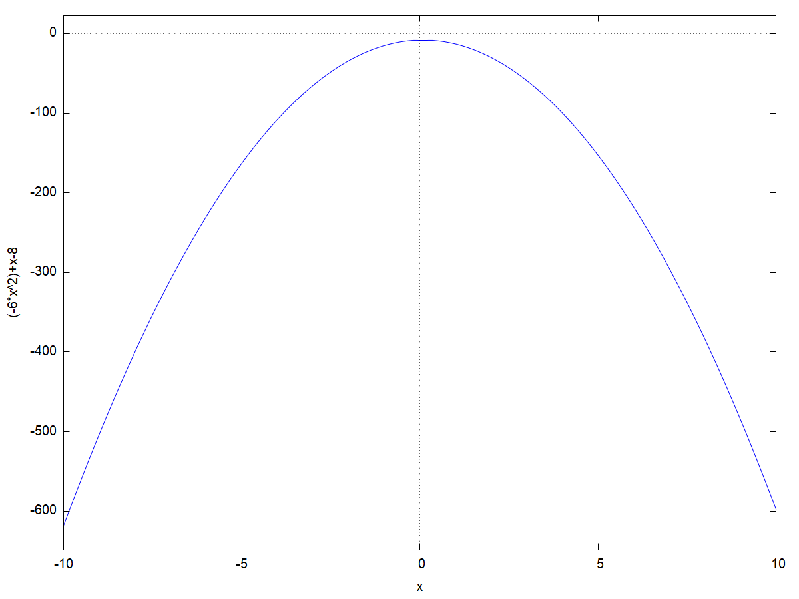
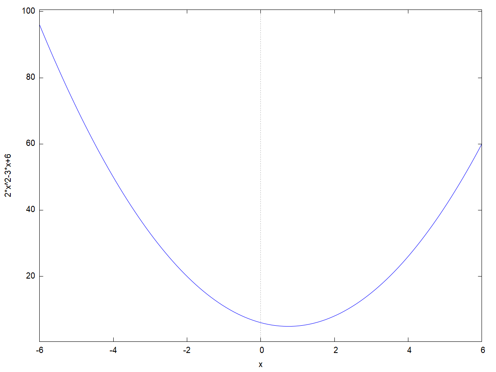

\( \DeclareMathOperator{\abs}{abs} \newcommand{\ensuremath}[1]{\mbox{$#1$}} \)
| --> | wxplot2d ( [ − 6 · x ^ 2 + x − 8 ] , [ x , − 10 , 10 ] ) $ |
\[\operatorname{ }\]
| --> | wxplot2d ( [ 2 · x ^ 2 − 3 · x + 6 ] , [ x , − 6 , 6 ] ) $ |
\[\operatorname{ }\]
\[\]\[\mbox{%error Warning: Can set maxima's working directory but cannot change it during the maxima session :}\]
Created with wxMaxima.
The source of this Maxima session can be downloaded here.